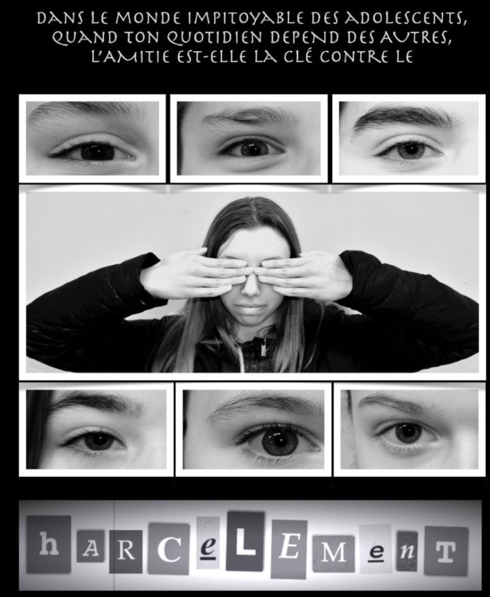

Énigme 1 : L'Audit des Signalements au Collège
Consigne de la mission : La Vie Scolaire du collège de Biguglia vous soumet 6 signalements récents. Analysez chaque situation pour déterminer si elle relève juridiquement du harcèlement scolaire ou d'un conflit ponctuel / événement isolé.
Clé du code : Le 1er chiffre correspond au nombre total de situations constituant un harcèlement scolaire avéré.
Léo et Max se disputent violemment lors d'une partie de ballon à la récréation de 10h. Des insultes sont échangées. Le lendemain matin, ils se serrent la main et jouent de nouveau ensemble.
Depuis deux mois, chaque matin, trois élèves bloquent délibérément le passage de Samia dans les escaliers, se moquent de ses vêtements et incitent les autres à rire d'elle.
Sur une story partagée avec 40 élèves de la classe, un montage ridicule de la photo d'Hugo est republié chaque soir avec des légendes dégradantes que toute la classe commente.
Chloé a reçu une mauvaise note à son évaluation de mathématiques. Elle pleure seule sur un banc pendant la récréation sans que personne ne vienne lui parler.
Tous les midis depuis la rentrée, deux élèves cachent le sac de Tom à la cantine, renversent son plateau et l'empêchent de s'asseoir à une table pour l'isoler.
Après une défaite lors d'une rencontre sportive UNSS, un élève envoie un SMS furieux avec une insulte à un camarade. Aucun autre message n'est échangé par la suite.
Énigme 2 : Le Dossier Judiciaire & La Loi de 2022
Consigne de la mission : Depuis mars 2022, le harcèlement scolaire est un délit pénal. Retrouvez les sanctions exactes de l'article 222-33-2-3 du Code pénal, puis résolvez l'équation pour extraire le 2ème chiffre.
« Les faits de harcèlement scolaire sont punis de d'emprisonnement et de 000 € d'amende lorsque les faits ont causé une incapacité totale de travail (ITT) inférieure ou égale à 8 jours. »
« En cas de suicide ou de tentative de suicide de la victime harcelée, la peine maximale encourue passe à de réclusion criminelle et 000 € d'amende. »
Énigme 3 : Analyse Vidéo du Court-Métrage « Des Héros »
Consigne : Visionnez le court-métrage officiel « Des Héros » ci-dessous et observez la bascule d'Anthony face à Enzo.
🎯 3 Questions d'observation :
- Pourquoi Anthony rit-il avec le groupe au début ?
- Qu'est-ce qui donne concrètement sa force au harceleur ?
- Quel geste décisif brise l'engrenage à la fin ?
📋 DÉCISION DU JURY : LE POUVOIR DES TÉMOINS
Cochez UNIQUEMENT les réactions qui protègent réellement la victime :
Énigme 4 : La Fréquence de Secours 3018
Consigne : Composez le numéro national unique, gratuit, 100% anonyme et confidentiel. Le 4ème chiffre correspond au DERNIER chiffre de ce numéro.
⚡ POUVOIRS OFFICIELS DU 3018 :
- Accessible 7j/7 de 9h à 23h, gratuit et anonyme.
- Tiers de confiance : fait supprimer en urgence des contenus sur Snapchat, TikTok, Instagram.
- Coffre-fort numérique de preuves certifié.
Atelier : Les 3 Dossiers Complexes
Consigne : Instruisez les 3 affaires ci-dessous. Débattez au sein de l'îlot pour trancher les zones grises sans tomber dans les idées reçues !
Noah, Yanis, Sarah & Kylian (L'effet de meute)
Yanis prend une photo de Noah qui trébuche en EPS. Le soir, sur Snapchat (28 élèves), il écrit : « Noah en mode bug système 💀 ».
Sarah en fait un sticker WhatsApp. Kylian le partage dans un groupe inter-collèges de 150 personnes. Pendant 10 jours en classe, des élèves se l'envoient en étouffant des rires. Noah finit par aller à l'infirmerie tous les jeudis (jour d'EPS).
Qualification juridique : Yanis affirme qu'il n'a posté qu'une fois dans un groupe privé de classe. Que tranche précisément la loi ?
Chaîne des responsabilités : Sarah a créé le sticker WhatsApp et Kylian l'a diffusé hors du collège. Comment le droit apprécie-t-il leurs actes ?
Léna, Inès & Hugo (Rumeur et exclusion silencieuse)
Inès lance une fausse rumeur en story Instagram accusant Léna d'avoir volé de l'argent. Aucune insulte n'est prononcée dans les couloirs, mais dès que Léna approche, les conversations s'arrêtent. À la cantine, personne ne s'assoit à sa table depuis 3 semaines. Hugo sait que c'est faux mais se tait par peur d'être rejeté.
Qualification juridique : Il n'y a ni coups ni insultes directes. Pourquoi est-ce pourtant qualifié de harcèlement moral ?
Le cas d'Hugo : Hugo sait que Léna est innocente. Quelle posture éthique et sécurisée doit-il adopter ?
Adam & Mathis (L'illusion de la légitime défense et le doxxing)
Adam reçoit des messages haineux anonymes sur NGL. Découvrant que c'est Mathis, il publie sur TikTok une vidéo filmée à l'insu de Mathis dans les toilettes avec son nom et son adresse postale privée.
Analyse juridique de la riposte : Le fait qu'Adam ait été la cible de moqueries pendant des mois lui donne-t-il le droit de riposter en publiant la vidéo et l'adresse de Mathis ?
L'illusion de l'anonymat : Mathis pensait que sur NGL la police ne pouvait rien lui faire. Comment la justice remonte-t-elle jusqu'à lui ?
L'Anatomie du Piège : Atelier « Le 7ème Regard »
Contexte de l'atelier : Cette affiche a été créée au collège pour sensibiliser à la mécanique du harcèlement. En îlot, explorez d'abord les 4 indices cachés dans sa composition graphique, puis donnez vie à l'un de ces 6 regards à travers l'atelier d'écriture collaborative.

Les 6 Yeux (3 en haut, 3 en bas)
« Pourquoi avoir cadré 6 yeux différents plutôt qu'un seul visage de harceleur ? »
Les Mains sur les Yeux
« Que signifie ce geste de se cacher les yeux ? Y a-t-il une double lecture ? »
Les Lettres « h A R C e L E M e n T »
« Pourquoi avoir écrit le mot avec des lettres dépareillées, de styles et tailles différents ? »
« L'Amitié est-elle la clé ? »
« L'affiche pose cette question. Quelle est la limite de cette idée ? »
✍️ Écriture d'une Scène Réaliste : « Le 7ème Regard »
« Regardez bien l'affiche : il y a 6 regards braqués sur elle. Imaginez que l'un de ces 6 regards décide de ne plus être un simple spectateur. Attention : pas de scène de film hollywoodienne où un héros fait un grand discours et où tout le monde applaudit. Dans la vraie vie au collège, comment ça se passe concrètement ? »
📢 RESTITUTION EN CLASSE ENTIÈRE : « CHANGER L'AFFICHE » (10 MIN)
Lecture Flash (6 min)
3 îlots volontaires lisent leur scène à voix haute. Pas de jugement moral, juste le vote à main levée de la classe : « Cette réaction est-elle crédible et réalisable dans notre collège ? »
L'Histoire de cette Affiche
Cette affiche a été réalisée par des élèves du collège. Elle démontre que si le phénomène traverse les générations, les moyens de s'en sortir reposent toujours sur la solidarité et la parole.
Faire Baisser les Mains
Si aujourd'hui la fille au centre baisse enfin les mains pour regarder autour d'elle au collège de Biguglia, vers qui peut-elle se tourner ? L'équipe ressource pHARe, la vie scolaire, l'infirmerie, ses professeurs, et le 3018 (gratuit, anonyme, 7j/7).
📱 Terminal Smartphone de la Victime
TERMINAL VERROUILLÉ
Diffusion imminente sur @biguglia_gossip_2b !
Consultez les notes prises par votre Scribe sur votre carnet de bord pour saisir les 4 chiffres dans l'ordre !